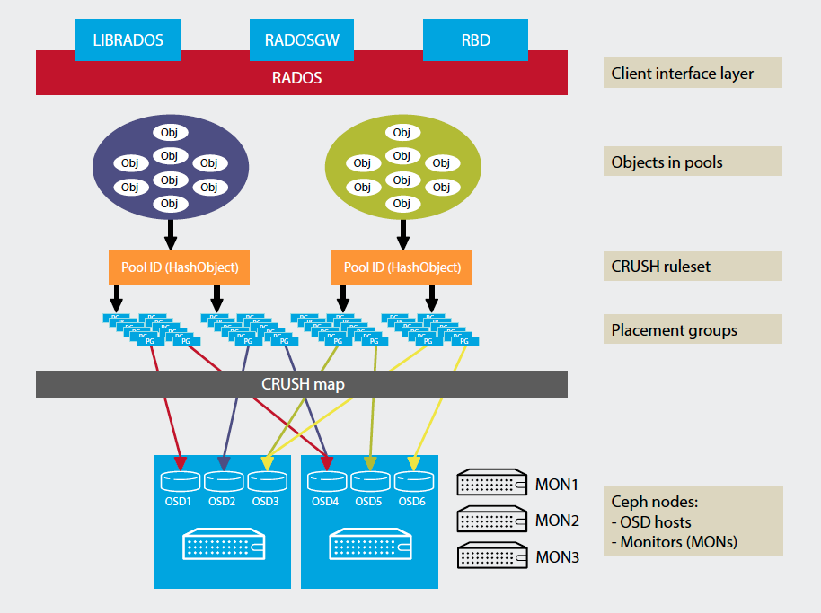
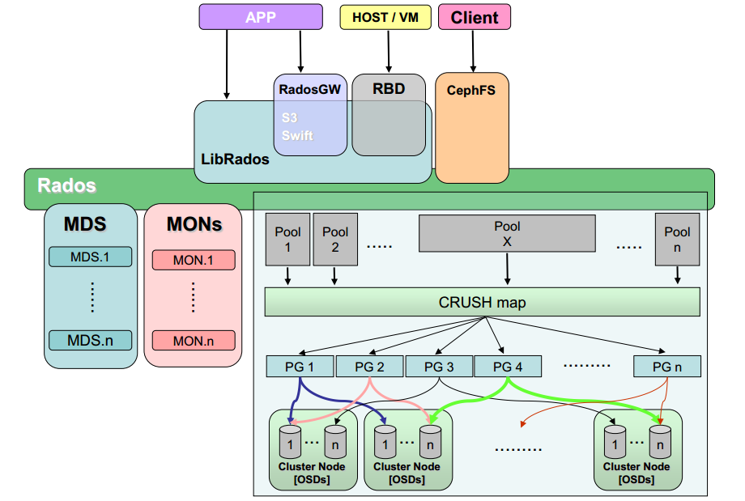

| 版本 | 日期 | 状态 | 修订人 | 摘要 |
|---|---|---|---|---|
| V1.0 | 2018-04-04 | 创建 | 开源方案 | 初始版本 |
这里我们搭建一个单容器版本的CEPH集群 注意: 这里搭建的ceph环境不能用于任何生产环境，但是可以快速运行ceph 系统


我们使用的环境是 centos 7 x86-64 架构
[root@open-ceph ~]# docker --version
Docker version 1.13.1, build 774336d/1.13.1
开始安装 ceph-common:
# yum install centos-release-ceph-jewel.noarch -y
# yum install -y ceph-common ceph
为了简化配置，这里环境是关闭 selinux 和 firewalld
[root@open-ceph ~]# getenforce
Disabled
[root@open-ceph ~]# systemctl status firewalld (已经卸载)
Unit firewalld.service could not be found.
运行docker版本镜像
docker pull ceph/demo:tag-build-stable-2.2.11-jewel-centos-7
docker run -d --net=host -v /etc/ceph:/etc/ceph -v /var/lib/ceph:/var/lib/ceph \
-e MON_IP=192.168.124.31 -e CEPH_PUBLIC_NETWORK=192.168.124.0/24 -e MON_NAME=mon01 ceph/demo:tag-build-stable-2.2.11-jewel-centos-7
[root@open-ceph ceph]# ps -e | grep ceph
19622 ? 00:00:00 ceph-mon
19661 ? 00:00:01 ceph-osd
19665 ? 00:00:00 ceph-mds
192.168.124.31 是docker所在运行计算节点IP地址,如果出现问题(docker logs 查看),可以 rm -rf /etc/ceph/* 和 rm -rf /var/lib/ceph/* 删除配置后,重新再试.
在运行节点上，创建RBD IMAGE 并且映射到 /dev/rbdX 设备文件:
# 确认模块加载
[root@open-ceph ceph]# modprobe rbd
[root@open-ceph ceph]# lsmod | grep rbd
rbd 83938 0
libceph 287066 1 rbd
# 创建镜像文件,名字为 "demo" 大小1GB
$ rbd create demo -s 1024
$ rbd map demo
# 出现类似错误
rbd: sysfs write failed
RBD image feature set mismatch. You can disable features unsupported by the kernel with "rbd feature disable".
In some cases useful info is found in syslog - try "dmesg | tail" or so.
rbd: map failed: (6) No such device or address
# ceph新版中在map image时，给image默认加上了许多feature，通过rbd info可以查看到：
[root@open-ceph ceph]# rbd info demo
rbd image 'demo':
size 1024 MB in 256 objects
order 22 (4096 kB objects)
block_name_prefix: rbd_data.5e2874b0dc51
format: 2
features: layering, exclusive-lock, object-map, fast-diff, deep-flatten
flags:
# 可以看到foo image拥有： layering, exclusive-lock, object-map, fast-diff, deep-flatten。
# 不过遗憾的是CentOS的3.10内核仅支持其中的layering feature，其他feature概不支持。我们需要手动disable这些features：
[root@open-ceph ceph]# uname -r
3.10.0-514.el7.x86_64
[root@open-ceph ceph]# rbd feature disable demo exclusive-lock, object-map, fast-diff, deep-flatten
[root@open-ceph ceph]# rbd map demo
/dev/rbd0
[root@open-ceph ceph]# rbd showmapped
id pool image snap device
0 rbd demo - /dev/rbd0
# 格式化文件系统
$ mkfs.ext4 /dev/rbd0
[root@open-ceph ceph]# rbd --image demo -p rbd info
rbd image 'demo':
size 1024 MB in 256 objects
order 22 (4096 kB objects)
block_name_prefix: rbd_data.5e2874b0dc51
format: 2
features: layering
flags:
# 后面就可以挂在此设备了
ceph-rbd 存储插件使用ceph secret 来做验证. 编码密钥是在ceph monitor机器上生成:
# 在 ceph monitor host (这里是运行ceph 容器的节点主机上):
$ ceph auth get-key client.admin
AQDva7JVEuVJBBAAc8e1ZBWhqUB9K/zNZdOHoQ==
#copy the above value and paste it in the echo command below:
$ echo "AQDva7JVEuVJBBAAc8e1ZBWhqUB9K/zNZdOHoQ=="| base64
QVFEdmE3SlZFdVZKQkJBQWM4ZTFaQldocVVCOUsvek5aZE9Ib1E9PQo=
# copy the above base64 output
端口6789必须能被访问
# nc 测试
$ nc 192.168.124.31 6789 </dev/null
$ echo $? #返回值必须是 0
#or
$ telnet 192.168.124.31 6789
# error if refused, else CTRL-C to exit telnet
更多信息 请参考ceph 文档